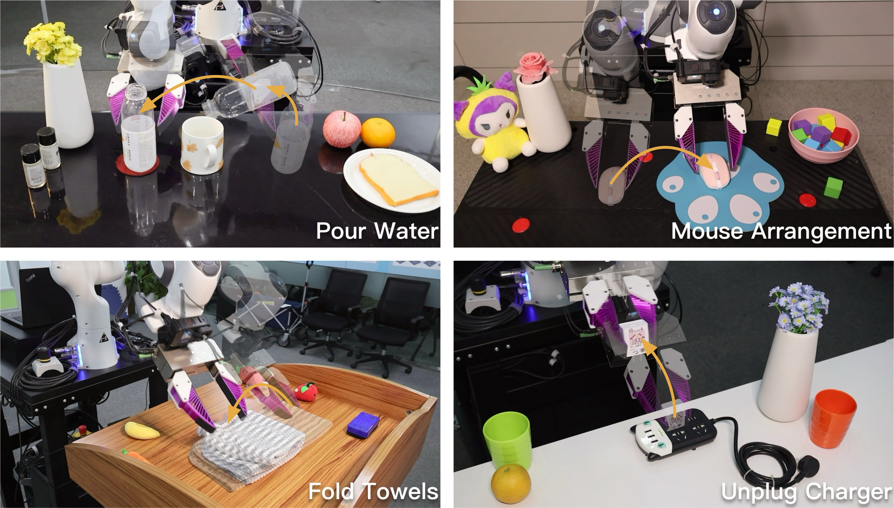
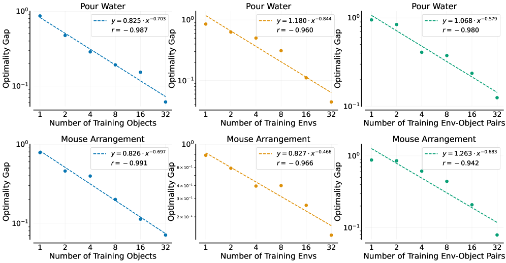

단일 태스크 모방학습에서 정책 일반화가 데이터 규모에 대해 어떻게 스케일 하는가를 4개 실태스크·수만 롤아웃으로 empirically 정립. 결론: 성능은 학습 환경 수 M과 학습 물체 수 O에 대해 거듭제곱(power-law)로 향상되며, 수는 다양성보다 훨씬 덜 중요. 한 환경-물체 pair당 데모 개수는 어느 임계(≈50)를 넘으면 이득이 급감. 이 원리를 따라 4명이 오후 하루에 pair당 50 데모(총 1,600 데모) 수집만으로 미지 환경·미지 물체에서 평균 ~90% zero-shot 성공.
1배경 · 문제의식
NLP·비전에서 스케일 법칙(모델·데이터를 키우면 성능이 예측 가능하게 향상)이 확립되어 왔지만, 로봇 조작에서는 (a) 데모 수집이 매우 비싸고, (b) "무엇을 스케일해야 하는가"(환경·물체·데모 수)에 대한 empirical guidance가 부족했다. 이 논문은 단일 태스크 조건에서 이 세 축을 독립적으로 변주하며 정책 일반화의 스케일 법칙을 정량화한다.
2핵심 Contribution
3축 스케일 실험 설계 — 환경 수 M · 물체 수 O · pair당 데모 수 N을 격자로 변주해 각각의 optimality gap이 어떤 함수로 감소하는지 측정.
Power-law 발견 — 미지 환경/물체에서의 gap이 M, O에 대해 대략 거듭제곱으로 감소. 반면 N(pair당 데모 수)는 임계 이후 이득 급감(≈50개면 충분).
사람이 손잡이형 그리퍼(UMI)를 직접 들고 데모를 촬영하면, iPhone/GoPro의 비주얼 SLAM이 그리퍼 위치를 추적해 로봇 훈련 데이터를 생성한다. 이 방식은 로봇 없이도 다양한 환경에서 저비용으로 데모를 얻을 수 있게 해 스케일 실험을 가능케 함. SLAM 실패(~10%)한 데모는 자동 필터.
학습 · 모델
백본은 Diffusion Policy(image-conditioned). 각 태스크마다 환경-물체-데모 축을 변주한 학습셋을 만들고, 미지 환경 + 미지 물체에서 실로봇 평가. 성공률은 각 조건 20 rollout × 4 태스크의 평균.
측정 지표
일반화 성능은 "새 환경·새 물체 성공률", scaling curve는 optimality gap(=상한 대비 부족한 정도)를 종축, M/O/N을 횡축으로 log–log fit. 회귀는 Gap ∝ x−α 형태.
4개 태스크
Pour Water
주전자에서 컵에 물 붓기
Mouse Arrangement
마우스를 지정 패드 위 정렬
Fold Towels
수건을 반으로 접기
Unplug Charger
충전기 케이블 뽑기
전 실험 총 >40,000 데모 수집 · >15,000 실로봇 rollout으로 평가.
4실험 결과
Power-law 요약
환경 수 M ↑: 미지 환경 gap이 대략 M−α로 감소 (Pearson r 강함).
물체 수 O ↑: 미지 물체 gap이 O−β로 감소.
Env-Object pair 수 M·O ↑: 종합 gap이 pair 수에 대해 일관된 거듭제곱 감소.
Pair당 데모 수 N: N>≈50이면 이득 미미 → 다양성 > 수.
실제 4-태스크 성공률 (미지 환경·미지 물체, 20 rollout)
태스크
성공률 (%)
Pour Water
85.0 ± 19.4
Mouse Arrangement
92.5 ± 9.7
Fold Towels
87.5 ± 17.1
Unplug Charger
90.0 ± 14.1
평균
~90
이 결과는 4명×오후 반나절 = 1,600 데모만으로 얻은 값. 다양성 우선 수집이 절대 데이터량보다 효과적.
초기 대규모 실험 (Pour Water, Mouse Arrangement)
32 환경 × 32 물체 × pair당 120 데모(=3,650–3,820 유효). Power-law fit 계수와 상관(Pearson r)이 강함. 이 대규모 셋이 이후 축소 프로토콜(pair당 50)의 안전한 상한 근거를 제공.
5Ablation / 실무 통찰
초기 그리퍼 pose·orientation 랜덤화가 중요 — 하지 않으면 성공률이 급감. 정책이 초기 관찰에 과적합.
SLAM 신뢰성: 환경에 시각적 특징이 풍부해야 UMI 궤적 추정이 안정. 흰 벽/균질 배경은 실패율↑.
데모 임계 N≈50: 그 이상 수집은 성능 미미, 시간을 새 환경·새 물체로 돌리는 게 이득.
Diffusion Policy 백본 기준이지만, 데이터 규모/다양성 효과는 백본-불변에 가까움(추가 실험 시사).
본 논문의 실용적 결론은 "다양성을 최대화하고 pair당 데모는 최소화"라는 데이터 수집 rubric.
6핵심 Figure / Table

4개 실태스크. Pour Water, Mouse Arrangement, Fold Towels, Unplug Charger — 각기 다른 조작 프리미티브(부동·정렬·유연물·전기 커넥터)를 대표. 미지 환경·미지 물체에서 평가. (출처: arXiv:2410.18647)

Figure 5 — Power-law fit. 환경 수·물체 수·pair 수에 대한 optimality gap의 log–log 회귀. 강한 거듭제곱 관계가 4 태스크 모두에서 관찰. (출처: arXiv:2410.18647)
핵심 rubric — "환경·물체 다양성은 넓게, pair당 데모는 얕게(≈50)". 이 원칙에 따라 수집한 1,600 데모가 ~90% 미지 환경·물체 성공을 냈다는 것이 이 논문의 실무적 결정타.